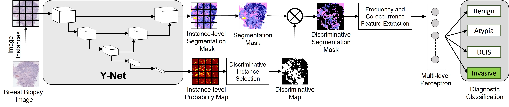
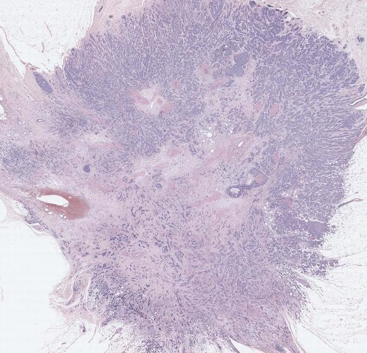
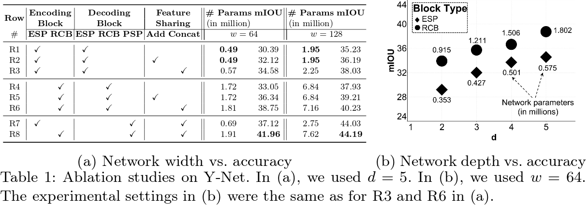
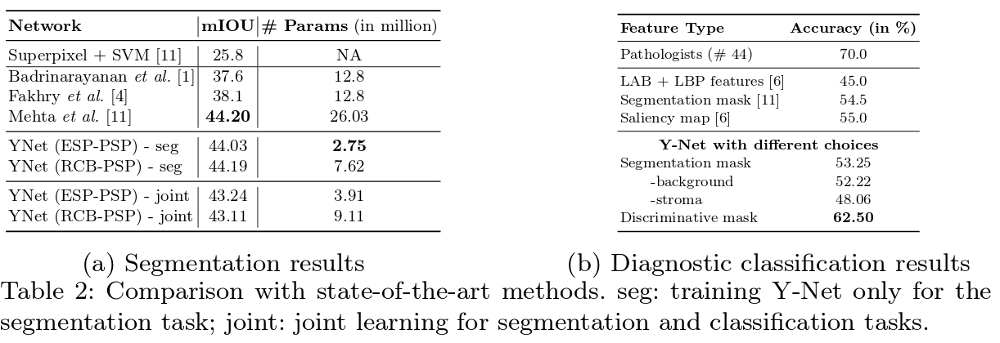

Sachin Mehta*,1, Ezgi Mercan*,1, Jamen Bartlett2, Donald Weaver2, Joann Elmore1, and Linda Shapiro1
1
University of Washington, Seattle, WA, USA
2
University of Vermont, Burlington, VT, USA
|  |
Figure: Overview of our method for detecting breast cancer. Our system is given an ROI from a breast biopsy WSI and breaks it into instances that are fed into Y-Net. Y-Net produces two different outputs: an instance-level segmentation mask and an instance-level probability map. The instance-level segmentation masks have, for each instance, the predicted labels of the eight different tissue types. These are combined to produce a segmentation mask for the whole ROI. The instance-level probability map contains (for every pixel) the maximum value of the probability of that instance being in one of the four diagnostic categories. This map is thresholded to binary and combined with the segmentation mask to produce the discriminative segmentation mask. A multi-layer perceptron then uses the frequency and co-occurrence features extracted from the final mask to predict the cancer diagnosis. |
Abstract
In this paper, we introduce a conceptually simple network for generating discriminative tissue-level segmentation masks for the purpose of breast cancer diagnosis. Our method efficiently segments different types of tissues in breast biopsy images while simultaneously predicting a discriminative map for identifying important areas in an image. Our network, Y-Net, extends and generalizes U-Net by adding a parallel branch for discriminative map generation and by supporting convolutional block modularity, which allows the user to adjust network efficiency without altering the network topology. Y-Net delivers state-of-the-art segmentation accuracy while learning 6.6x fewer parameters than its closest competitors. The addition of descriptive power from Y-Net's discriminative segmentation masks improve diagnostic classification accuracy by 7% over state-of-the-art methods for diagnostic classification.
Downloads
|  | Learning to Segment Breast Biopsy Whole Slide Images
Sachin Mehta*, Ezgi Mercan*, Jamen Bartlett, Donald Weaver, Joann Elmore, and Linda Shapiro 21st International Conference On Medical Image Computing & Computer Assisted Intervention (MICCAI'18) |
Results
|  |
| &npsp; |
|  |
This page is adapted from PSPNet.